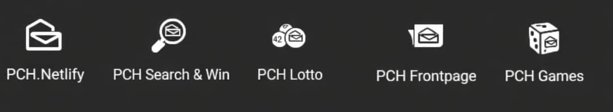

Notre mission
Chez Publishers Clearing House, nos programmes PCH et nos tirages visent à soutenir des occasions significatives qui ont une incidence positive sur les personnes et les collectivités. Nous croyons qu'il faut récompenser la participation, inspirer l'espoir et donner aux gens les moyens d'agir grâce à des prix qui changent une vie et à des programmes fiables qui apportent enthousiasme et possibilités au quotidien.
Historique du programme
Publishers Clearing House a été fondée en 1953 à Port Washington, dans l'État de New York, par Harold Mertz, ancien directeur d'une équipe de vente porte-à-porte d'abonnements à des magazines. L'entreprise a commencé dans le sous-sol de M. Mertz avec l'aide de sa première épouse, LuEsther, et de leur fille, Joyce. Ses premiers envois comptaient 10 000 enveloppes expédiées de la maison de M. Mertz à Long Island, dans l'État de New York, et proposaient 20 abonnements à des magazines. Cent commandes ont été reçues. En quelques années, l'entreprise a quitté le sous-sol pour s'installer dans un immeuble de bureaux et a commencé à embaucher du personnel. Lorsque PCH a déménagé son siège social en 1969, l'ancien emplacement a été donné à la ville et renommé centre communautaire Harold E. Mertz. Les revenus de l'entreprise avaient atteint 50 millions de dollars américains en 1981 et 100 millions de dollars en 1988. En 1967, PCH a organisé son premier tirage pour accroître les ventes d'abonnements, en s'inspirant de tirages organisés par Reader's Digest. Les premiers prix allaient de 1 $ à 10 $ et les participants avaient une chance sur dix de gagner. Après que les tirages eurent augmenté le taux de réponse aux envois, des prix de 5 000 $, puis éventuellement de 250 000 $, ont été offerts. PCH a commencé à annoncer ses tirages à la télévision en 1974. Elle a été la seule grande entreprise d'abonnements à plusieurs magazines jusqu'en 1977. L'ancien client Time Inc. et plusieurs autres éditeurs ont créé American Family Publishers (AFP) pour faire concurrence à PCH après que l'entreprise eut refusé à plusieurs reprises la demande de Time d'obtenir une plus grande part des revenus tirés des abonnements. AFP et PCH se sont livré concurrence pour obtenir les droits exclusifs de magazines et pour proposer de meilleures idées de promotion et de prix. Lorsque AFP a augmenté son gros lot à 1 million de dollars, puis à 10 millions de dollars en 1985, PCH a augmenté ses prix en conséquence. PCH avait distribué 7 millions de dollars en prix en 1979, 40 millions en 1991 et 137 millions en 2000. En 1989, deux membres de son équipe publicitaire, Dave Sayer et Todd Sloane, ont créé la Patrouille des prix, un événement médiatisé où les gagnants sont surpris par un chèque à leur domicile. L'idée s'inspirait de la série télévisée The Millionaire des années 1950. Les deux entreprises étaient souvent confondues, les porte-parole d'AFP, Ed McMahon et Dick Clark, étant pris pour des représentants de PCH, mieux connue.
RÈGLES GÉNÉRALES DES TIRAGES
Les personnes qui souhaitent gagner voudront peut-être en savoir plus sur les tirages Publishers Clearing House. Voici des réponses à certaines questions fréquemment posées sur les tirages PCH et plus encore.
Saviez-vous qu'il existe des différences entre les tirages, les loteries et les concours? Découvrez tous les détails ici!
- Qu'est-ce qu'un tirage? Par définition, les tirages aux États-Unis sont des publicités ou des outils promotionnels par lesquels des biens de valeur, soit des prix, sont attribués au hasard à des consommateurs participants, sans achat, contrepartie ni droit d'inscription requis pour participer ou gagner.
- Qu'est-ce qu'une loterie? Une loterie est un outil promotionnel qui comprend des prix, le hasard et une contrepartie, soit un achat ou des frais. Des biens de valeur sont attribués au public par tirage, mais contrairement aux tirages, les loteries exigent un paiement ou un achat pour participer. Les loteries sont illégales sauf lorsqu'elles sont organisées par des États ou certains organismes de bienfaisance exemptés. Si vous croyez avoir reçu une sollicitation présentée comme un tirage, mais qui constitue une loterie illégale, vous devriez communiquer avec votre bureau de poste local ou un bureau de protection du consommateur.
- Qu'est-ce qu'un cadeau? Chez PCH, les cadeaux sont des promotions qui attribuent des prix au hasard aux participants. Chaque cadeau comporte des dates de début et de fin, un nombre et une valeur prévus de prix, une méthode de sélection des gagnants, des critères d'admissibilité, une répartition définie des participations et une estimation des chances de gagner chaque prix offert.
- Qu'est-ce qu'un numéro de cadeau? PCH attribue un numéro à chaque cadeau pour l'identifier et en assurer le suivi. Ce numéro sert de nom à chaque cadeau.
- Alerte aux arnaques de Publishers Clearing House: méfiez-vous des fraudeurs qui prétendent être de vrais employés de PCH! Chez Publishers Clearing House, nous nous soucions des consommateurs et voulons vous protéger contre les escrocs qui prétendent frauduleusement être associés à notre nom PCH bien connu. Entreprise en activité depuis plus de 50 ans, PCH est une marque emblématique reconnue dans les foyers partout au pays. Si vous connaissez le nom PCH, soyez assuré que les escrocs le connaissent aussi.
Service des affaires des consommateurs
Le service des affaires des consommateurs de Publishers Clearing House agit comme votre défenseur au sein de l'entreprise. Notre équipe est composée de personnes dévouées qui travaillent de manière proactive pour informer, aider et protéger les consommateurs. Nos efforts comprennent:
Merci de l'intérêt que vous portez au service des affaires des consommateurs de Publishers Clearing House! Nous espérons que nos efforts vous permettront d'avoir l'assurance que derrière notre célèbre logo « House » se trouve une entreprise qui se soucie des gens et qui s'engage à agir correctement pour tous les consommateurs.

Si vous souhaitez communiquer avec un représentant du service des affaires des consommateurs de PCH, écrivez-nous à officialpch00112@gmail.com ou écrivez au service des affaires des consommateurs de PCH.